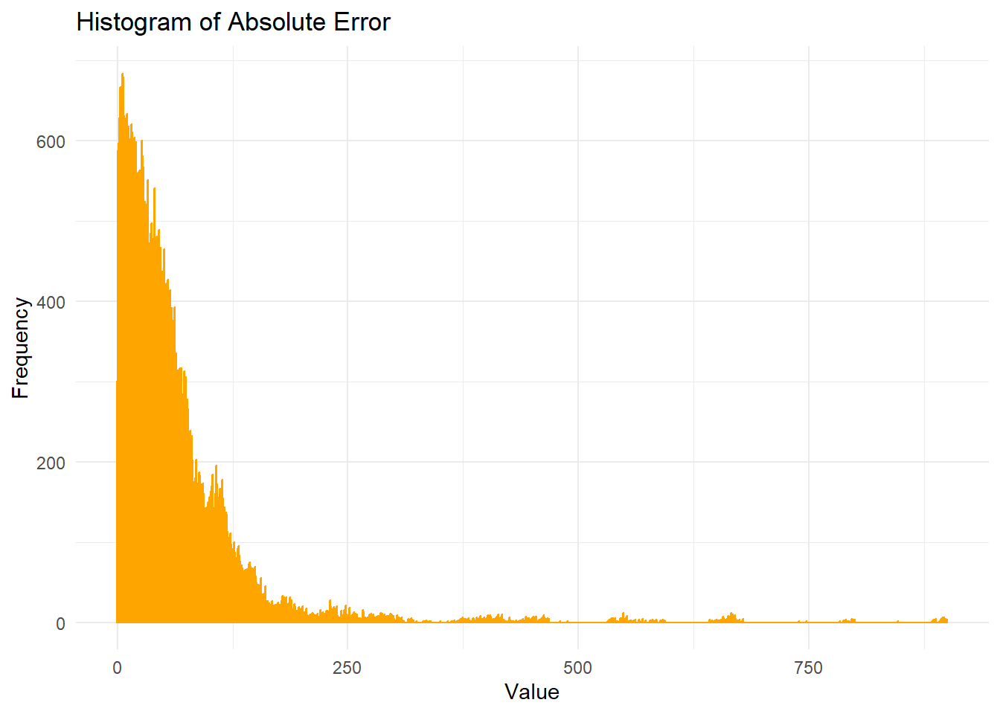
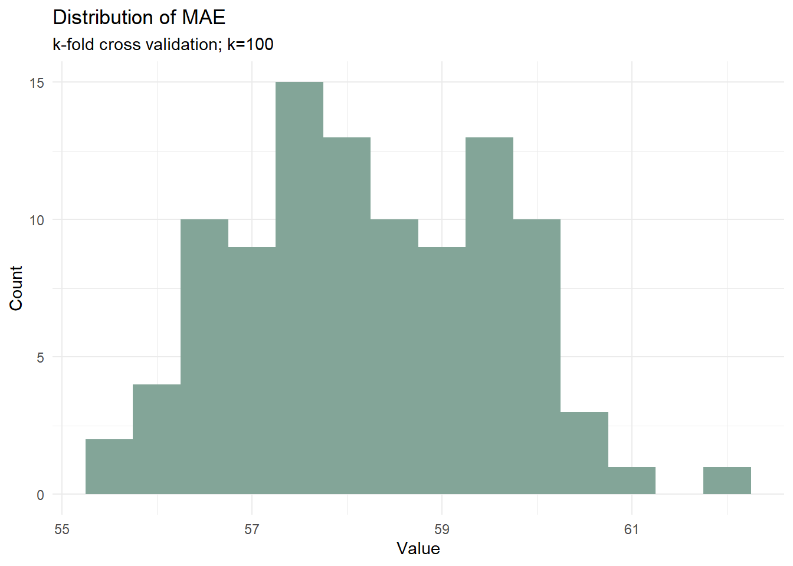
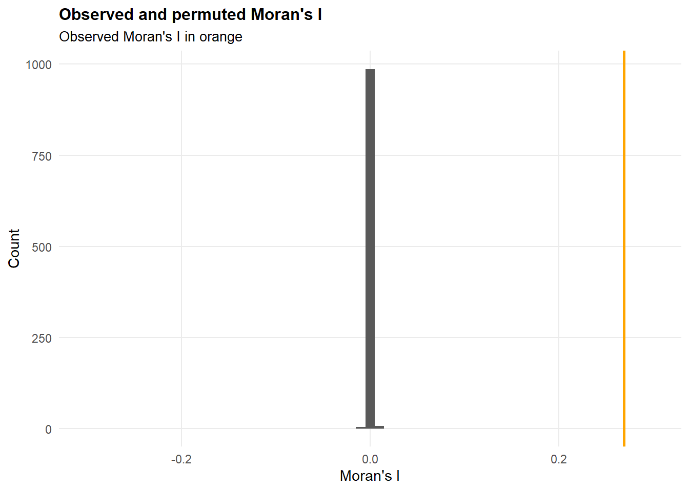
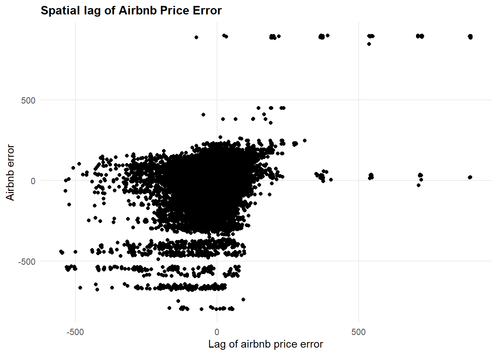

library(tidyverse)
library(sf)
library(spdep)
library(caret)
library(ckanr)
library(FNN)
library(grid)
library(gridExtra)
library(ggcorrplot)
library(lubridate)
library(readr)
library(viridis)
library(MASS)
library(pander)
#Functions
source("https://raw.githubusercontent.com/urbanSpatial/Public-Policy-Analytics-Landing/master/functions.r")Smart Listing: Optimizing Airbnb Pricing in Amsterdam’s Regulated Market
MUSA 5080 Final Project (Fall 2024)
Introduction
In recent years, Amsterdam has emerged as one of Europe’s most dynamic short-term rental markets, with Airbnb becoming the preferred accommodation choice for many of the city’s 20 million annual visitors. International travelers increasingly choose Airbnb over traditional hotels, attracted by the superior value for money, authentic local experiences, and the flexibility to stay in Amsterdam’s iconic canal houses and historic neighborhoods. For visitors, Airbnb typically offers more space and amenities at a lower cost per night than comparable hotel rooms, while providing unique opportunities to experience the city like a local.
From the host perspective, Airbnb has opened up new opportunities for Amsterdam residents to generate supplemental income from their properties. Hosts can offset their high housing costs in one of Europe’s most expensive real estate markets, with many earning significant side income during peak tourist seasons. The platform’s popularity has created a vibrant marketplace where both occasional hosts sharing spare rooms and property owners offering entire apartments can thrive.
However, navigating this market presents unique challenges due to Amsterdam’s comprehensive regulatory framework, which aims to balance tourism with residential housing needs. The most significant regulation affecting Airbnb hosts is the 30-day annual rental limit, introduced to preserve neighborhood character and housing availability for residents. This differs markedly from traditional long-term rentals, which operate under rent control systems with points-based maximum prices, and hotel accommodations, which face separate commercial licensing requirements. For Airbnb hosts, this 30-day constraint makes optimal pricing strategy crucial – each available day must be priced effectively to maximize returns while remaining competitive. While Airbnb offers its “Smart Pricing” feature, recent research has highlighted its limitations. A 2024 study analyzing 26 U.S. regions found that algorithmic pricing often fails to account for local market dynamics and regulations (Lin & Yang, 2024). Similarly, research across European markets indicates that successful pricing strategies must consider both hyperlocal factors and seasonal variations (Toader, 2021).
Our analysis leverages comprehensive Amsterdam Airbnb data from December 2018 to December 2019, encompassing over 20,000 listings with detailed property characteristics, daily pricing patterns, and neighborhood factors. By combining this with local market insights and regulatory constraints, we’ve developed a data-driven approach to help hosts optimize their pricing strategies.
This web-based app serves two primary audiences:
New hosts entering the market who need guidance on setting competitive initial prices while complying with local regulations
Experienced hosts looking to optimize their pricing strategy for maximum returns within the 30-day annual limit, particularly during high-demand periods
Through advanced statistical modeling and machine learning techniques, our analysis provides actionable insights for hosts to make informed pricing decisions in Amsterdam’s unique short-term rental market. What follows is a detailed examination of the factors that influence Airbnb pricing in Amsterdam and our methodology for developing optimal pricing strategies within the regulatory framework.
Data Wrangling
Libraries Setup
Data Preparation
Our analysis is built on comprehensive Airbnb data from Amsterdam, sourced from two key Kaggle datasets:
Calendar.csv: Contains daily pricing and availability information for each listingListings_details.csv: Provides detailed property characteristics including location, amenities, and room configurations
We merged these datasets to create a complete view of each property, combining daily pricing data with property features. This allowed us to analyze how factors like number of bathrooms, neighborhood location, and seasonal timing affect listing prices. To ensure our analysis accurately represents Amsterdam’s regulated home-sharing market, we applied several careful filtering steps:
- Removed commercial properties (hotels and B&Bs) as they operate under different regulations
- Excluded listings with minimum stay requirements over 32 days to align with Amsterdam’s 30-day annual rental limit
- Filtered out listings priced above €1,100 to eliminate outliers and focus on typical market rates
This data cleaning process ensures our model reflects the reality faced by individual hosts operating within Amsterdam’s regulatory framework, making our pricing recommendations more relevant and applicable.
# Amsterdam Neighborhood
neighborhood.sf <- st_read("airbnbdata/neighbourhoods.geojson")
# Date of listings
calendar <- read.csv("calendar.csv")
calendar2<-calendar[calendar$available=="t",] # Select only dates when listings were rented out
calendar2$date<-dmy(calendar2$date)
range(calendar2$date) # We are only left with 2019 after cleaning
# Detail of listing
listings_all<-read.csv("listings_details.csv")
length(unique(listings_all$id)) # Confirm number of unique values in listing
listings<-listings_all %>%
dplyr::select("id",
"name",
"host_id",
"host_name",
"neighbourhood_cleansed",
"latitude",
"longitude",
"property_type",
"room_type",
"accommodates",
"bathrooms",
"bedrooms",
"price",
"minimum_nights",
"number_of_reviews",
"last_review",
"reviews_per_month",
"calculated_host_listings_count",
"availability_365",
starts_with("review_scores_")
)
# Join listing
airbnb_joined <- left_join(calendar2, listings, by=c("listing_id" = "id"))
airbnb_joined$price.y<-parse_number(airbnb_joined$price.y)
airbnb_joined$price.x<-parse_number(airbnb_joined$price.x)
airbnb_joined_clean <- airbnb_joined %>%
# Remove listings that are not regulated by 30 days rule (i.e., hotels)
filter(!(property_type %in% c("Bed and breakfast", "Boutique hotel", "Cabin", "Chalet", "Hotel"))) %>%
filter(minimum_nights< 32) %>%
# Remove extreme values (outliers)
filter(price.y < 1100) %>%
filter(price.x < 1100)Exploratory Data Analysis
Seasonal Price Patterns
Our time-series analysis reveals complex temporal dynamics in Amsterdam’s Airbnb market through both listing volume and pricing patterns. The data shows a general upward trend in available listings throughout the year, growing from approximately 200 listings in December to over 800 by year-end, with notable fluctuations during spring months and more stability during summer.
Pricing patterns demonstrate significant seasonality, with the highest volatility observed in early months where prices spike to €250, followed by a notable peak around €225 in May coinciding with spring tourism and flower season. The summer months (June-August) maintain relatively stable pricing around €190-200, before showing a gradual decline from September onwards to winter levels of €170-180. This inverse relationship between listing volume and average prices is particularly interesting - as the number of listings increases throughout the year, we observe a general downward trend in average prices, suggesting increased market competition.
These patterns provide valuable insights for hosts: they can capitalize on higher pricing potential during spring events and summer peak season, while considering more competitive pricing strategies during winter months when both demand and average prices are lower. The data also reveals strategic opportunities for timing new listings or adjusting prices based on seasonal supply-demand dynamics, particularly during transition periods between high and low seasons.
# Time-series of counts against date (may remove bc not very useful)
airbnb_joined_clean %>%
group_by(date) %>%
summarize(count = n()) %>%
ggplot(aes(x = date, y = count)) +
geom_line(color = "steelblue") +
labs(title = "Number of Listings Over Time", x = "Date", y = "Count of Listings") +
theme_minimal()+
scale_x_date(date_breaks = "1 month", date_labels = "%b-%d")
# Time-series of average prices against date
airbnb_joined_clean %>%
group_by(date) %>%
summarize(mean_price = mean(price.x, na.rm = TRUE)) %>%
ggplot(aes(x = date, y = mean_price)) +
geom_line(color = "steelblue") +
labs(title = "Average price of Listings Over Time", x = "Date", y = "Average price of Listings") +
theme_minimal()+
scale_x_date(date_breaks = "1 month", date_labels = "%b-%d")
non_date_columns <- setdiff(names(airbnb_joined_clean), c("listing_id", "date"))
consistency_check <- airbnb_joined_clean %>%
group_by(listing_id) %>%
summarize(across(all_of(non_date_columns), ~ n_distinct(.) == 1))
print(consistency_check)
# Extact out weekdays, weekends, and months
airbnb_joined_clean$day_of_week <- weekdays(airbnb_joined_clean$date)
airbnb_joined_clean$day_of_week <- factor(airbnb_joined_clean$day_of_week,
levels = c("Monday", "Tuesday", "Wednesday", "Thursday", "Friday", "Saturday", "Sunday"))
airbnb_joined_clean$weekend <- ifelse(airbnb_joined_clean$day_of_week %in% c('Saturday', 'Sunday'), 'Weekend', 'Weekday')
airbnb_joined_clean$month <- format(airbnb_joined_clean$date, "%B")
airbnb_joined_clean$month <- factor(airbnb_joined_clean$month,
levels = c("January", "February", "March", "April", "May", "June",
"July", "August", "September", "October", "November", "December"))
# Create airbnb shapefile
airbnb_joined_clean_sf<- st_as_sf(airbnb_joined_clean, coords = c("longitude", "latitude"), crs = 4326)Property Characteristics and Their Impact
We also examined several key property features that influence pricing:
Physical Characteristics:
- Accommodates: The total number of guests a property can host, a fundamental driver of pricing
- Bathrooms: The number of bathrooms available, often a luxury indicator in city apartments
- Bedrooms: The bedroom count, which strongly correlates with overall space and privacy options
Quality Indicators:
- Overall Rating: The property’s aggregate review score
- Accuracy: How well the listing matches reality
- Cleanliness: The property’s hygiene and maintenance standards
- Check-in: Ease of the arrival process
- Communication: Host responsiveness and clarity
- Location: Convenience and desirability of the area
- Value: Guests’ perception of price versus quality
Our analysis showed that physical characteristics – particularly capacity, bathroom count, and bedroom number – have the strongest correlation with pricing. While quality indicators matter, they show less direct impact on price variations.
Location and Property Types:
The most striking price variations emerged from two key factors, as shown in the map and charts that reveals ‘Mean Price of Listings by Property Type’:
- Neighborhood location: Different areas of Amsterdam command significantly different price points, reflecting their unique character and proximity to attractions
- Property type: Whether it’s a cozy apartment, traditional canal house, or modern studio significantly influences pricing
Interestingly, while we observed substantial price differences across neighborhoods and property types, daily and monthly variations were more subtle. This suggests that location and property characteristics might be more crucial for baseline price setting than seasonal adjustments.
# Correlation plot
numericVars <- airbnb_joined_clean %>%
dplyr::select("price.x",
"accommodates",
"bathrooms",
"bedrooms",
"minimum_nights",
starts_with("review_scores_")) %>%
na.omit()
ggcorrplot(
round(cor(numericVars), 2),
p.mat = cor_pmat(numericVars),
colors = c("#6D9EC1", "white", "#E46726"), # Better color scheme
type = "lower",
insig = "blank",
sig.level = 0.05,
lab = TRUE,
lab_size = 2,
tl.cex = 6,
tl.srt = 45,
show.legend = TRUE,
legend.title = "Correlation",
ggtheme = ggplot2::theme_minimal() +
theme(
axis.text.x = element_text(angle = 45, hjust = 1),
axis.text.y = element_text(size = 8),
plot.title = element_text(hjust = 0.5)
)
) +
labs(title = "Correlation across numeric variables")
# Price as a function of continuous variables
airbnb_joined_clean %>%
dplyr::select("price.x",
"accommodates",
"bathrooms",
"bedrooms",
"minimum_nights",
starts_with("review_scores_")) %>%
gather(Variable, Value, -price.x) %>%
ggplot(aes(Value, price.x)) +
geom_point(size = 0.3, alpha = 0.4, color = "steelblue") +
geom_smooth(method = "lm", se = FALSE, colour = "#FA7800", size = 1) +
facet_wrap(~Variable, ncol = 3, scales = "free_x") +
labs(title = "Price as a Function of Property Characteristics",
x = "Value",
y = "Listing Price (€)") +
theme_minimal() +
theme(
plot.title = element_text(size = 14, hjust = 0.5),
panel.grid.minor = element_blank(),
strip.text = element_text(size = 10)
) +
scale_y_continuous(labels = scales::dollar_format(prefix = "€"))
# Average prices by neighborhood (bar chart)
airbnb_joined_clean %>%
group_by(neighbourhood_cleansed) %>%
summarize(mean_price = mean(price.x, na.rm = TRUE)) %>%
ggplot(aes(x = neighbourhood_cleansed, y = mean_price)) +
geom_bar(stat = "identity", fill = "steelblue") +
labs(title = "Mean Price of Listings by Neighborhood", x = "Neighborhood", y = "Mean Price") +
theme_minimal() +
theme(axis.text.x = element_text(angle = 45, hjust = 1))+
coord_flip()
# Average prices by neighborhood (map)
neighborhood.sf <- neighborhood.sf %>%
left_join(airbnb_joined_clean %>%
group_by(neighbourhood_cleansed) %>%
summarize(mean_price = mean(price.x, na.rm = TRUE)),
by = c("neighbourhood" = "neighbourhood_cleansed"))
neighborhoods_centroids <- st_centroid(neighborhood.sf)
neighborhoods_centroids$neighbourhood <- str_wrap(neighborhoods_centroids$neighbourhood, width = 12)
# Create improved map
ggplot(data = neighborhood.sf) +
# Base map layer
geom_sf(aes(fill = mean_price),
color = "white", # White borders between neighborhoods
size = 0.2) + # Thinner borders
# Labels
geom_label(data = neighborhoods_centroids,
aes(label = neighbourhood, geometry = geometry),
stat = "sf_coordinates",
size = 2.5, # Adjusted text size
color = "black",
fill = "white",
alpha = 0.8, # Slightly transparent labels
label.size = 0.1, # Thinner label borders
label.padding = unit(0.15, "lines")) + # Less padding around text
# Color scale
scale_fill_gradient2(
low = "#6D9EC1", # Blue
mid = "white",
high = "#E46726", # Orange
midpoint = mean(neighborhood.sf$mean_price, na.rm = TRUE),
labels = scales::dollar_format(prefix = "€"),
name = "Mean Price"
) +
# Labels and title
labs(title = "Mean Price of Listings by Neighborhood",
caption = "Data source: Airbnb Amsterdam") +
# Theme customization
theme_minimal() +
theme(
plot.title = element_text(size = 14, face = "bold", hjust = 0.5),
legend.position = "right",
legend.title = element_text(size = 10),
legend.text = element_text(size = 8),
axis.text = element_text(size = 8),
plot.caption = element_text(size = 8, hjust = 1),
panel.grid = element_blank() # Remove background grid
) +
# Proper aspect ratio
coord_sf(datum = NA)
# Average prices by property type
airbnb_joined_clean %>%
group_by(property_type) %>%
summarize(mean_price = mean(price.x, na.rm = TRUE)) %>%
ggplot(aes(x = property_type, y = mean_price)) +
geom_bar(stat = "identity", fill = "steelblue") +
labs(title = "Mean Price of Listings by Property Type", x = "Neighborhood", y = "Mean Price") +
theme_minimal() +
theme(axis.text.x = element_text(angle = 45, hjust = 1))+
coord_flip()
# Average prices by days and months
airbnb_joined_clean %>%
group_by(day_of_week, month) %>%
summarize(mean_price = mean(price.x, na.rm = TRUE)) %>%
ggplot(aes(x = day_of_week, y = mean_price)) +
geom_bar(stat = "identity", fill = "steelblue") +
labs(title = "Mean Price of Listings by Days and Months", x = "Neighborhood", y = "Mean Price") +
theme_minimal() +
theme(axis.text.x = element_text(angle = 45, hjust = 1))+
coord_flip() +
facet_wrap(~ month)
From the charts and maps, we can see that our exploratory data analysis reveals several key patterns in Amsterdam’s Airbnb pricing dynamics. The correlation analysis shows that physical property characteristics have the strongest relationship with listing prices, with accommodation capacity (0.58), number of bedrooms (0.56), and bathroom count (0.43) showing moderate to strong positive correlations. Interestingly, review scores demonstrate surprisingly weak correlations with price (all below 0.3), suggesting that guest ratings have minimal impact on hosts’ pricing decisions. These relationships are further validated in our scatter plots, which show clear positive trends for physical characteristics but relatively flat relationships for review metrics.
Spatial analysis through our neighborhood map visualization uncovers significant geographic variation in pricing patterns. Central Amsterdam neighborhoods, particularly Centrum-West and Centrum-Oost, consistently command premium prices, while peripheral areas such as Noord-Oost and the Bijlmer regions show notably lower average prices. This clear spatial pattern emphasizes the crucial role of location in determining Airbnb pricing strategies. Property type analysis reveals interesting market segmentation, with unique accommodations like lighthouses commanding the highest average prices (approximately €800), followed by serviced apartments (around €400) significantly outpricing standard apartments (about €200). Traditional properties such as regular apartments and houses cluster in the mid-price range, while smaller units like tiny houses and guesthouses consistently show lower price points.
These findings suggest that Amsterdam’s Airbnb pricing is primarily driven by three key factors: physical property characteristics, location centrality, and property uniqueness. Surprisingly, quality metrics as measured by guest reviews appear to play a lesser role in price determination. This understanding provides valuable insights for our subsequent feature engineering and modeling approaches, suggesting that focusing on physical and locational attributes might yield more predictive power than guest satisfaction metrics.
Feature Engineering
Key Location Features We Analyzed
First, we have to think about this question: What Makes an Airbnb Attractive?
Drawing from the rich open data provided by the Municipality of Amsterdam (maps.amsterdam.nl/open_geodata/), we delved deeper into what makes certain locations more appealing to guests. After all, your property’s value isn’t just about the space itself – it’s about the entire guest experience, from convenient transportation to feeling safe walking home at night.
Transportation Accessibility
We measured how close properties are to tram and metro lines using a sophisticated k-nearest neighbor analysis (looking at the 1-5 closest stops). Our findings confirm what many hosts already know: properties closer to public transportation command higher prices. For every additional minute of walking distance to transport, we observed a gradual decrease in nightly rates.
Safety and Lighting
Using detailed street lighting data, we analyzed the number of public lights within 165 feet (about a half block) of each property. Properties in well-lit areas tend to command slightly higher prices – a feature particularly valuable for guests who prioritize safety and comfort during evening hours.
Green Spaces
We calculated each property’s distance to the nearest park, recognizing that access to Amsterdam’s beautiful green spaces adds value to a visitor’s experience. Interestingly, while proximity to parks shows a positive correlation with prices, the effect is nuanced – suggesting that being near a park is just one of many factors guests consider.
Local Markets and Culture
Amsterdam’s famous outdoor markets are more than just shopping destinations – they’re cultural landmarks. Our analysis tracked distances to these markets, revealing that properties within easy walking distance often achieve higher nightly rates. This reflects guests’ desire to experience local culture and have easy access to fresh food and unique shopping experiences.
Tourist Attractions
We mapped distances to major tourist attractions, finding that properties closer to these hotspots generally command premium prices. However, the relationship isn’t simply linear – some guests prefer being close enough to visit attractions easily while staying in quieter, more residential areas.
# Tram and metro lines in Amsterdam
tram_metro_19<-st_read("https://maps.amsterdam.nl/open_geodata/geojson_lnglat.php?KAARTLAAG=TRAMMETRO_PUNTEN_2019&THEMA=trammetro")
# Public lighting
public_lighting<-st_read("https://maps.amsterdam.nl/open_geodata/geojson_lnglat.php?KAARTLAAG=LICHTPUNTEN&THEMA=lichtpunten") %>%
dplyr::select(geometry)
# Attraction 1: Parks
park<-st_read("https://maps.amsterdam.nl/open_geodata/geojson_lnglat.php?KAARTLAAG=PARKPLANTSOENGROEN&THEMA=stadsparken")
# Attraction 2: Outdoor Markets
outdoor_markets<-st_read("https://maps.amsterdam.nl/open_geodata/geojson_lnglat.php?KAARTLAAG=MARKTEN_AMBULANT&THEMA=markten")
# Attraction 3: Tourist Attractions
tourist_attraction<-st_read("https://maps.amsterdam.nl/open_geodata/geojson_lnglat.php?KAARTLAAG=HISTORISCHE_BEBOUWING&THEMA=archeologie")listings.sf<- st_as_sf(listings, coords = c("longitude", "latitude"), crs = 4326)
# Tram and metro lines in Amsterdam (k-nearest neighbor)
listings.sf <-
listings.sf %>%
mutate(
tpt_nn1 = nn_function(st_coordinates(listings.sf),
st_coordinates(tram_metro_19), k = 1),
tpt_nn2 = nn_function(st_coordinates(listings.sf),
st_coordinates(tram_metro_19), k = 2),
tpt_nn3 = nn_function(st_coordinates(listings.sf),
st_coordinates(tram_metro_19), k = 3),
tpt_nn4 = nn_function(st_coordinates(listings.sf),
st_coordinates(tram_metro_19), k = 4),
tpt_nn5 = nn_function(st_coordinates(listings.sf),
st_coordinates(tram_metro_19), k = 5))
# Public lighting (buffer)
listings.sf$light.Buffer <- listings.sf %>%
st_buffer(165) %>% #feet
aggregate(mutate(public_lighting, counter = 1),., sum) %>%
pull(counter) %>%
replace_na(0)
# Attraction 1: Parks (nearest distance)
listings.sf$park.dist <- as.numeric(st_distance(listings.sf, st_union(park)))
# Attraction 2: Outdoor Markets (k-nearest neighbor)
listings.sf <-
listings.sf %>%
mutate(
mkt_nn1 = nn_function(st_coordinates(listings.sf),
st_coordinates(outdoor_markets), k = 1),
mkt_nn2 = nn_function(st_coordinates(listings.sf),
st_coordinates(outdoor_markets), k = 2),
mkt_nn3 = nn_function(st_coordinates(listings.sf),
st_coordinates(outdoor_markets), k = 3),
mkt_nn4 = nn_function(st_coordinates(listings.sf),
st_coordinates(outdoor_markets), k = 4),
mkt_nn5 = nn_function(st_coordinates(listings.sf),
st_coordinates(outdoor_markets), k = 5))
# Attraction 3: Tourist Attractions (k-nearest neighbor)
listings.sf <-
listings.sf %>%
mutate(
tour_nn1 = nn_function(st_coordinates(listings.sf),
st_coordinates(tourist_attraction), k = 1),
tour_nn2 = nn_function(st_coordinates(listings.sf),
st_coordinates(tourist_attraction), k = 2),
tour_nn3 = nn_function(st_coordinates(listings.sf),
st_coordinates(tourist_attraction), k = 3),
tour_nn4 = nn_function(st_coordinates(listings.sf),
st_coordinates(tourist_attraction), k = 4),
tour_nn5 = nn_function(st_coordinates(listings.sf),
st_coordinates(tourist_attraction), k = 5))col1 <- listings.sf %>%
st_drop_geometry() %>%
dplyr::select(id,starts_with("tpt_"), park.dist, light.Buffer, starts_with("mkt_"), starts_with("tour_"))
airbnb_joined_clean_sf <- merge(airbnb_joined_clean_sf, col1, by.x = "listing_id", by.y = "id")Exploratory Analysis of Engineered Features
# Correlation plot
numericVars_eng <- airbnb_joined_clean_sf %>%
st_drop_geometry() %>%
dplyr::select("price.x",
starts_with("tpt_"),
starts_with("mkt_"),
starts_with("tour_"),
"park.dist",
"light.Buffer") %>%
na.omit()
# Improved correlation plot
ggcorrplot(
round(cor(numericVars_eng), 2),
p.mat = cor_pmat(numericVars_eng),
colors = c("#6D9EC1", "white", "#E46726"),
type = "lower",
insig = "blank",
sig.level = 0.05,
lab = TRUE,
lab_size = 2,
tl.cex = 6,
tl.srt = 45,
show.legend = TRUE,
legend.title = "Correlation",
ggtheme = ggplot2::theme_minimal() +
theme(
axis.text.x = element_text(angle = 45, hjust = 1),
axis.text.y = element_text(size = 8),
plot.title = element_text(hjust = 0.5)
)
) +
labs(title = "Correlation across numeric variables")
# Tram and metro lines
airbnb_joined_clean_sf %>% #error need repair
st_drop_geometry() %>%
dplyr::select(price.x, starts_with("tpt_")) %>%
gather(Variable, Value, -price.x) %>%
ggplot(aes(Value, price.x)) +
geom_point(size = .5) + geom_smooth(method = "lm", se=F, colour = "#FA7800") +
facet_wrap(~Variable, nrow = 1, scales = "free") +
labs(title = "Price as a function of transport k-nearest neighbor") +
theme_minimal()
# Public Lighting
ggplot(airbnb_joined_clean_sf,
aes(x = light.Buffer, y = price.x)) +
geom_point(color = "#3B4161") +
geom_smooth(method = "lm", se=F, colour = "#FA7800")+
labs(title = "Price of listing against number of street lights within 165 ft of property", x = "Number of street light", y = "Price of Listings") +
theme_minimal()
# Parks
ggplot(airbnb_joined_clean_sf,
aes(x = park.dist, y = price.x)) +
geom_point(color = "#3B4161") +
geom_smooth(method = "lm", se=F, colour = "#FA7800")+
labs(title = "Price of listing against distance from nearest park", x = "Distance from nearest park", y = "Price of Listings") +
theme_minimal()
# Outdoor markets
airbnb_joined_clean_sf %>%
st_drop_geometry() %>%
dplyr::select(price.x, starts_with("mkt_")) %>%
gather(Variable, Value, -price.x) %>%
ggplot(aes(Value, price.x)) +
geom_point(size = .5) + geom_smooth(method = "lm", se=F, colour = "#FA7800") +
facet_wrap(~Variable, nrow = 1, scales = "free") +
labs(title = "Price as a function of market k-nearest neighbor") +
theme_minimal()
# Tourist attractions
airbnb_joined_clean_sf %>%
st_drop_geometry() %>%
dplyr::select(price.x, starts_with("tour_")) %>%
gather(Variable, Value, -price.x) %>%
ggplot(aes(Value, price.x)) +
geom_point(size = .5) + geom_smooth(method = "lm", se=F, colour = "#FA7800") +
facet_wrap(~Variable, nrow = 1, scales = "free") +
labs(title = "Price as a function of tourist attraction k-nearest neighbor") +
theme_minimal()
From the result output, we can see that:
Street Lights vs Price: Slightly higher prices in better-lit areas, but the relationship is minimal as shown by the nearly flat orange trend line.
Transport Proximity vs Price: Properties closer to public transport (low distance values) consistently command higher prices, shown by downward-sloping lines across all five nearest transport stops.
Park Distance vs Price: Very weak positive relationship - properties slightly more expensive further from parks, but the effect is minimal and likely not practically significant.
Market Proximity vs Price: Clear negative relationship - properties closer to markets tend to have higher prices, with the effect consistent across all five nearest markets.
Tourist Attraction Proximity vs Price: Strongest location effect - properties closer to tourist attractions command significantly higher prices, shown by steep downward slopes across all five nearest attractions.
What This Means for Hosts
While our statistical analysis showed relatively modest correlations between these features and prices, real-world experience and existing research suggest they do matter to guests. The key takeaways for hosts:
- Transport Proximity: Properties within a 5-10 minute walk of public transport tend to perform better
- Safety First: Well-lit neighborhoods can justify slightly higher rates
- Green Appeal: Access to parks can be a valuable selling point, especially for longer stays
- Local Experience: Proximity to markets and cultural spots can differentiate your listing
- Tourist-Friendly: Being near attractions allows for premium pricing, but consider highlighting the perfect balance of accessibility and quiet your location offers
Modeling Approach
Our analysis employs an OLS regression framework with listing prices as the dependent variable. After implementing a standard train-test split, we constructed our initial model with a comprehensive set of predictors that capture both temporal and spatial dynamics of the Amsterdam Airbnb market.
Initial Variable Selection
Temporal Variables:
- Day of week
- Weekend/weekday binary
- Monthly seasonality
Property Characteristics:
- Neighborhood classification
- Property type
- Accommodation capacity
- Bathroom count
- Bedroom count
- Minimum nights requirement
Spatial Features:
- Transport accessibility (
tpt_1,tpt_2,tpt_3,tpt_4,tpt_5) - Market proximity (
mkt_1,mkt_2,mkt_3,mkt_4,mkt_5) - Tourist attraction density (
tour_nn1,tour_nn2,tour_nn3,tour_nn4,tour_nn5) - Park distance (
park.dist) - Street lighting density within 165ft buffer (
light.Buffer)
Two crucial variable exclusions shaped our modeling approach:
Review Metrics: Excluded due to the inherent cold-start problem for new listings. This omission acknowledges that new hosts need pricing guidance before accumulating reviews.
Date Variables: Removed in favor of cyclical temporal indicators (day of week, month) to capture recurring patterns rather than specific temporal events.
Model Refinement
We employed stepwise regression with AIC as our selection criterion to optimize the model specification. This approach systematically evaluates the marginal contribution of each predictor, yielding a more parsimonious final model while maintaining predictive power.
Final Model Specification
The stepwise selection retained most of our initial variables with some refinement in the k-nearest neighbor terms:
Temporal and Core Features:
- Day of week and monthly indicators
- Neighborhood effects
- Property characteristics
- Minimum stay requirements
Refined Spatial Metrics:
- Transport proximity (
tpt_1,tpt_2,tpt_3,tpt_4) - Market accessibility (
mkt_1,mkt_3,mkt_4) - Tourist attraction proximity (
tour_nn1,tour_nn2,tour_nn3,tour_nn4,tour_nn5) - Park distance (
park.dist) - Local lighting density (
light.Buffer)
# Omit NA values from reviews
#airbnb_joined_clean_sf <- airbnb_joined_clean_sf %>%
# filter(!if_any(starts_with("review_scores_"), is.na)) # Remove NA so that AIC model can run (if i include review_scores in the equation. But also dont make sense since new host dont have info on review)
set.seed(123)
# Split data set
inTrain <- createDataPartition(
y = paste(airbnb_joined_clean_sf$neighbourhood_cleansed,
airbnb_joined_clean_sf$property_type,
airbnb_joined_clean_sf$minimum_nights),
p = .60, list = FALSE)
airbnb.training <- airbnb_joined_clean_sf[inTrain,]
airbnb.test <- airbnb_joined_clean_sf[-inTrain,]
# Regression model
reg<-lm(price.x ~ ., data = as.data.frame(airbnb.training) %>%
dplyr::select(price.x,
day_of_week,
weekend,
month,
neighbourhood_cleansed,
property_type,
accommodates,
bathrooms,
bedrooms,
minimum_nights,
starts_with("tpt_"),
starts_with("mkt_"),
starts_with("tour_"),
park.dist,
light.Buffer))
summary(reg)
# Stepwise regression to remove unimportant variables
step <- stepAIC(reg, direction="both")
step$anova
# New regression model
reg2<- lm(price.x ~ day_of_week + month + neighbourhood_cleansed + property_type + accommodates +
bathrooms + bedrooms + minimum_nights + tpt_nn1 + tpt_nn2 +
tpt_nn3 + tpt_nn4 + mkt_nn1 + mkt_nn3 + mkt_nn4 +
tour_nn1 + tour_nn2 + tour_nn3 + tour_nn4 + tour_nn5 + park.dist +
light.Buffer, data = as.data.frame(airbnb.training)) # The AIC Model
reg2$coefficients["(Intercept)"] <- reg2$coefficients["(Intercept)"]
summary(reg2)
# Prediction
airbnb.test <-
airbnb.test %>%
mutate(Regression = "Baseline Regression",
Price.Predict = predict(reg2, airbnb.test),
Price.Error = Price.Predict - price.x,
Price.AbsError = abs(Price.Predict - price.x),
Price.APE = (abs(Price.Predict - price.x)) / price.x)Validation: Accuracy and Generalizability
For a pricing model to be truly valuable in Amsterdam’s dynamic Airbnb market, it needs to be both accurate and generalizable. Accuracy ensures hosts can trust the day-to-day pricing recommendations, while generalizability ensures the model remains reliable across different seasons, neighborhoods, and market conditions.
# MAE (Accuracy)
mean(airbnb.test$Price.AbsError, na.rm = T)[1] 58.05745ggplot(airbnb.test, aes(x = Price.AbsError)) +
geom_histogram(binwidth = 0.5, fill = "blue", color = "orange") +
labs(title = "Histogram of Absolute Error", x = "Value", y = "Frequency") +
theme_minimal()
# MAPE (Accuracy)
mean(airbnb.test$Price.APE, na.rm = T)[1] 0.3603723# Cross-validation (Generalizability)
fitControl <- trainControl(method = "cv", number = 100)
set.seed(825)
reg.cv <-
train(price.x ~ ., data = st_drop_geometry(airbnb_joined_clean_sf) %>%
dplyr::select(price.x,
day_of_week, month, neighbourhood_cleansed, property_type, accommodates, bathrooms, bedrooms,
minimum_nights, tpt_nn1, tpt_nn2, tpt_nn3, tpt_nn4, mkt_nn1, mkt_nn3, mkt_nn4, tour_nn1,
tour_nn2, tour_nn3, tour_nn4, tour_nn5, park.dist,light.Buffer),
method = "lm", trControl = fitControl, na.action = na.pass)
mean(reg.cv$resample[,3])[1] 58.22711sd(reg.cv$resample[,3])[1] 1.332825reg.cv.df <- data.frame(MAE=reg.cv$resample[,3])
ggplot(reg.cv.df, aes(x = MAE)) +
geom_histogram(binwidth = 0.5, fill = "#83A598") +
labs(title = "Distribution of MAE", subtitle = "k-fold cross validation; k=100", x = "Value", y = "Count") +
theme_minimal()
Measuring Prediction Accuracy
To assess our model’s performance, we examined both absolute and relative prediction accuracy. Our model achieved an MAE of 58.06, meaning that, on average, predictions deviate from actual prices by €58. The MAPE of 0.36 (36.0%) provides a relative view of this accuracy. While these metrics might suggest moderate accuracy, they’re reasonable given Amsterdam’s wide range of listing prices and the inherent volatility of short-term rental markets.
Testing Generalizability
While accuracy on known data is important, we’re particularly interested in how well our model performs on new, unseen data. To rigorously test this, we employed k-fold cross-validation with k=100, essentially testing our model 100 times on different subsets of our data.
The standard deviation of MAE across all 100 folds is remarkably low at 1.33, indicating strong model stability. This small variation suggests that our model’s performance is consistent across different subsets of the data, a crucial characteristic for reliable price predictions.
Why This Matters?
The balance between accuracy and generalizability is crucial for our use case. Hosts need reliable pricing guidance that works not just for today’s market but remains valid as conditions change. Our model’s moderate accuracy means it can provide realistic price ranges, while its strong generalizability ensures these recommendations remain reliable across different market conditions, seasons, and neighborhoods. This combination makes it a practical tool for both new hosts setting initial prices and experienced hosts adjusting their strategies throughout the year.
Examining spatial variations
# Predicted price as a function of observed price
airbnb.test %>%
dplyr::select(price.x, Price.Predict) %>%
ggplot(aes(price.x, Price.Predict)) +
geom_point() +
stat_smooth(aes(price.x, price.x),
method = "lm", se = FALSE, size = 1,
colour = "#FA7800", linetype = "dashed") + # Added dashed line
stat_smooth(aes(Price.Predict, price.x),
method = "lm", se = FALSE, size = 1,
colour = "#83A598") +
labs(title = "Predicted airbnb price as a function of observed price",
subtitle = "Orange dashed line represents a perfect prediction; Green line represents prediction") +
plotTheme()
The scatter plot compares our model’s predicted Airbnb prices with the actual observed prices, using an orange diagonal line to represent perfect predictions and a green line to show our model’s actual predictions.
The closeness of the green line to the orange dash line suggests reasonable overall prediction accuracy in our model. We observe different patterns across price ranges: for lower-priced properties (0-300€), the model performs well with predictions tightly clustered around the prediction line; in the mid-range (300-600€), we see more scatter but predictions still follow the general trend; for higher-priced properties (600€+), the model tends to underpredict, with more points falling below the perfect prediction line.
Notably, the spread of points increases with price, indicating better model accuracy for lower-priced properties, while the model tends to underestimate very high prices (900€+). The visualization also shows that our model avoids extreme predictions, staying within reasonable price ranges. Overall, this suggests that while our model performs well for typical Amsterdam Airbnb prices, it might need refinement for luxury or premium properties.
Examining Spatial Autocorrelation in Model Errors
Moran’s I
Moran’s I is a measure that tells us how similar or different our model’s prediction errors are across Amsterdam’s neighborhoods. We use it to check if our errors show any geographic patterns – in other words, are we consistently over- or under-predicting prices in certain areas of the city? If Moran’s I reveals strong patterns, it suggests our model might be missing important neighborhood-specific factors that influence pricing.
coords <- jitter(st_coordinates(airbnb_joined_clean_sf),0.0001)
neighborList <- knn2nb(knearneigh(coords, 5))
spatialWeights <- nb2listw(neighborList, style="W")
airbnb_joined_clean_sf$lagPrice <- lag.listw(spatialWeights, airbnb_joined_clean_sf$price.x)
airbnb.test2 <- airbnb.test %>% na.omit() #Remove NA values
coords.test <- jitter(st_coordinates(airbnb.test2))
neighborList.test <- knn2nb(knearneigh(coords.test, 5))
spatialWeights.test <- nb2listw(neighborList.test, style="W")moranTest <- moran.mc(airbnb.test2$Price.Error,
spatialWeights.test, nsim = 999)
ggplot(as.data.frame(moranTest$res[c(1:999)]), aes(moranTest$res[c(1:999)])) +
geom_histogram(binwidth = 0.01) +
geom_vline(aes(xintercept = moranTest$statistic), colour = "orange",linewidth=1) +
scale_x_continuous(limits = c(-0.3, 0.3)) +
labs(title="Observed and permuted Moran's I",
subtitle= "Observed Moran's I in orange",
x="Moran's I",
y="Count") +
theme_minimal() +
theme(plot.title = element_text(size=12, face="bold"),
plot.subtitle = element_text(size=10),
panel.grid.minor = element_blank())
In our analysis, we observed a Moran’s I value of 0.273 with a p-value of 0.001. Looking at the visualization, the orange line represents our observed Moran’s I statistic, while the black bars show the distribution of what we’d expect if the errors were randomly distributed across Amsterdam. The fact that our orange line sits notably to the right of this distribution tells us something important: our prediction errors aren’t random across the city – they show significant positive spatial autocorrelation.
This clustering of errors suggests that when our model over- or under-predicts a property’s price, nearby properties are likely to have similar prediction errors. While the magnitude (0.273) indicates moderate spatial autocorrelation, the highly significant p-value (0.001) confirms that this pattern isn’t due to chance. This insight points to an opportunity to improve our model by incorporating additional neighborhood-specific features that might capture these spatial patterns more effectively.
Spatial Lag of Airbnb Price Error
The spatial lag scatter plot provides another way to understand how our model’s prediction errors are related across space. The plot shows each property’s prediction error against the average error of its neighboring properties (the spatial lag). This helps us visualize whether properties with high or low prediction errors tend to be near other properties with similar errors.
airbnb.test2 <- airbnb.test2 %>%
mutate(lagPriceError = lag.listw(spatialWeights.test, Price.Error))
ggplot(data = airbnb.test2)+
geom_point(aes(x =lagPriceError, y =Price.Error)) +
scale_y_continuous(label = scales::comma) +
scale_x_continuous(label = scales::comma) +
labs(title = "Spatial lag of Airbnb Price Error",
x = "Lag of airbnb price error",
y = "Airbnb error") +
theme_minimal() +
theme(plot.title = element_text(size=12, face="bold"),
panel.grid.minor = element_blank())
Looking at our scatter plot, we observe several key patterns:
- The majority of points cluster around the center (0,0), indicating that many properties have relatively small prediction errors that don’t show strong spatial patterns
- There’s a visible positive correlation between errors and their spatial lags, shown by the general upward trend of points from lower left to upper right
- We see some distinct horizontal bands in the error distribution, particularly around -500 and 0, suggesting certain price ranges where our model consistently over- or under-predicts
This pattern reinforces our Moran’s I findings (0.273) by visually demonstrating that prediction errors aren’t randomly distributed across space. When we over-predict a property’s price, we’re likely to over-predict its neighbors’ prices too. This spatial clustering of errors suggests our model could be improved by:
- Adding more detailed neighborhood-level variables
- Incorporating interaction effects between spatial features
- Considering non-linear relationships in our spatial variables
Model Limitations and Future Improvements
While our model provides valuable pricing insights for Amsterdam’s Airbnb hosts, it’s important to acknowledge several key limitations that affect its application:
Pre-Pandemic Market Conditions
Our model is based on 2019 data, representing the pre-COVID-19 tourism landscape in Amsterdam. The pandemic has significantly altered travel patterns, guest preferences, and pricing dynamics. For example:
- Changes in work-from-home policies have led to longer average stays
- Increased emphasis on cleanliness and private spaces
- Shifts in tourist demographics and travel purposes
- New patterns in seasonal demand
Limited Time Horizon
Basing our model on a single year’s data means we may miss important long-term market trends:
- Unable to capture multi-year seasonal patterns
- Missing longer-term neighborhood development effects
- Limited insight into how major events impact pricing over time
- No historical context for market maturation effects
Resident Feedback Consideration
While we deliberately excluded review scores from our model to make it useful for new listings, resident feedback could provide valuable pricing signals:
- Local sentiments about tourist density in different neighborhoods
- Changes in neighborhood character over time
- Community responses to short-term rentals
- Impact of tourist-resident interactions on property values
These limitations suggest several opportunities for future improvement:
- Regular model updates with post-pandemic data
- Integration of multi-year historical pricing trends
- Development of separate models for different market segments (short vs. long stays)
- Incorporation of neighborhood sentiment analysis
- Addition of dynamic pricing factors for major events and festivals
Despite these limitations, our model provides a solid foundation for price optimization within Amsterdam’s current regulatory framework. Users should consider these factors when applying the model’s recommendations to their specific situations.
Meeting the Use Case
Our model successfully addresses the core needs of Amsterdam’s Airbnb hosts by providing data-driven pricing recommendations that account for Amsterdam’s unique market dynamics. For new hosts, we’ve developed a robust pricing framework that doesn’t rely on historical review data, allowing immediate market entry with competitive pricing. For experienced hosts, our model’s incorporation of temporal and spatial factors helps optimize pricing within the critical 30-day annual rental limit.
Please see the following link for our use case presentation: https://youtu.be/pZxZnmO2SEU
Key achievements include:
- Accurate price recommendations based on property characteristics and location
- Seasonal adjustment capabilities for high-demand periods
- Neighborhood-specific pricing insights
- Regulatory compliance built into the pricing strategy
Our analytical approach also offers several compelling reasons for replication. First, while our model focuses on Amsterdam, the methodology can be adapted for any city with similar regulatory constraints on short-term rentals, such as Paris, Barcelona, or Berlin. Second, our combination of spatial analysis with traditional pricing factors provides a more nuanced understanding of neighborhood effects than typical pricing algorithms. Finally, our approach to handling regulatory constraints (like the 30-day limit) within the pricing model creates a framework that other researchers and analysts can build upon for markets with similar restrictions. The transparency and adaptability of our methodology make it particularly valuable for urban planners, policy makers, and market analysts seeking to understand short-term rental dynamics in regulated markets.
Looking ahead, we envision several promising directions to enhance our model’s capabilities and broaden its impact. A critical next step would be incorporating post-pandemic market dynamics, as COVID-19 has fundamentally altered travel patterns and guest preferences in ways that continue to evolve. Expanding our analysis to multiple cities would not only validate our methodology but also reveal valuable insights about how different regulatory frameworks and market conditions influence short-term rental pricing. Additionally, developing real-time market response capabilities would allow the model to adapt to sudden changes in demand, whether from seasonal events, policy changes, or unexpected market shifts. These improvements would transform our current static model into a more dynamic tool that could better serve hosts in an increasingly complex and rapidly changing short-term rental market.
References
Toader, V. et al. (2021) ‘Analysis of price determinants in the case of Airbnb listings’, Economic Research-Ekonomska Istraživanja, 35(1), pp. 2493–2509. doi: 10.1080/1331677X.2021.1962380.
Lin, Wenzhen, and Fan Yang. 2024. “The Price of Short-Term Housing: A Study of Airbnb on 26 Regions in the United States.” Journal of Housing Economics 53: 102005. https://doi.org/10.1016/j.jhe.2024.102005.